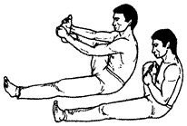

<- back
Next up: Поверженный дракон
Сжатое кольцо

Исходное положение: Как в упражнении 8: левая нога вытянута вперед, правая согнута в колене и приподнята. Обеими руками обхватываем правую стопу, наружное ребро стопы направлено вперед, пальцы ноги – вверх, голень почти параллельна полу.
На выдохе подтягиваем правую стопу к себе, при этом максимально разворачиваем стопу подошвой на себя и стремимся прижать подошву к груди. На вдохе отводим ногу в исходное положение.
При выполнении упражнения вертикальное положение правого бедра и горизонтальное положение голени сохраняются.
После упражнения выполните Змея кусает себя за хвост для левой ноги.
Next up: Поверженный дракон